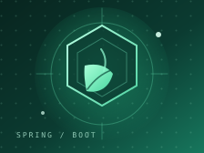
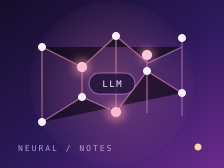

SEARCH RESULTS
“权限管理” 的搜索结果
找到 1,248 个仓库 用时 0.28 秒 已排除私有与已删除仓库
northstar-labs
/
veil-auth
面向多租户场景的权限管理与 RBAC 框架，内置组织架构、数据权限与审计日志。
权限管理
RBAC
Spring Boot
lumen-labs
/
lowcode-studio
可视化拖拽搭建中后台页面，支持自定义物料、Schema 协议与多人协作。
低代码
可视化
TypeScript

spring-forge / leaf-boot 开箱即用的 Spring Boot 权限管理脚手架，集成 JWT、Redis 与统一异常处理。 权限管理 脚手架 JWT data-craft / insight-board 面向业务分析的轻量级数据看板，拖拽配置图表、指标卡与筛选联动。 数据可视化 Dashboard React weave-lab / mini-flow 小程序端流程编排组件，支持表单、审批、消息通知与低代码配置。 微信小程序 工作流 组件库
neural-garden / tiny-llm-notes 从零实现一个小型语言模型，配套中文注释、训练脚本与完整读书笔记。 大模型 NLP 教程 rusty-box / oxide-db 用 Rust 编写的嵌入式键值数据库，支持 WAL、事务快照与多版本并发控制。 Rust 数据库 存储引擎 M moss-ui / moss-design 已归档 一套面向中后台的 React 组件库，强调可访问性、主题定制与设计系统一致性。 组件库 React 设计系统